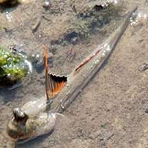
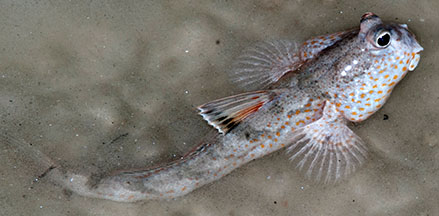
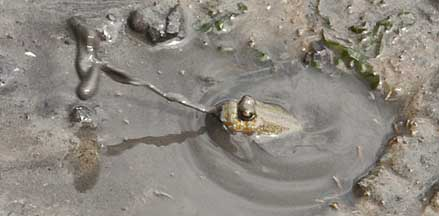
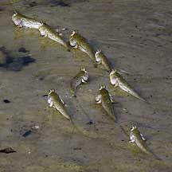
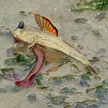
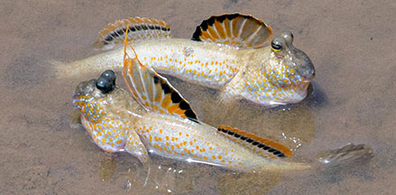
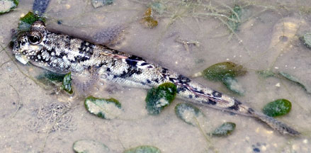

|
|
| fishes text index | photo index |
| Phylum Chordata > Subphylum Vertebrate > fishes > Family Gobiidae > mudskippers |
| Gold-spotted
mudskipper Periophthalmus chrysospilos Family Gobiidae updated Sep 2020 Where seen? This orange spotted fish is the most commonly seen mudskipper on many of our shores. On all kinds of shores including rocky shores, sandy areas near mangroves and seagrasses, as well as on coral rubble areas near reefs. Features: 6-12cm. Gaily speckled with orange-yellow spots on 'cheeks' and the sides of the body. Often with many dark bars along the body too. The male raises his bright orange-and-black dorsal fin to court females and intimidate rival males. Unlike females, males have elongated spikes on the first and second spine of his colourful first dorsal fin. |
 Male has elongated first and second spines on the first dorsal fin. Chek Jawa, Jan 10 |
 Lazarus Island, Feb 11 |
| Burrow wars: It digs a burrow on soft mud flats, spitting out balls of mud as it digs out the hole. One mudskipper was seen to spit out mud missiles at an intruder! |
|
 Spitting out mudballs as it digs a burrow. Chek Jawa, Jan 10 Photo shared by James Koh on his flickr. |
 Sometimes seen moving in a group. Pulau Semakau, Dec 04 |
|
| Schools of skippers: This mudskipper is sometimes seen in small groups, moving around together along the tide line. Sometimes they move in a line, following what seems to be the
leader. What does it eat? It eats small crabs, prawns and insects. One was seen eating a tubeworm. |
 Mudskipper eating a tubeworm. Chek Jawa, Jun 11 Photo shared by Loh Kok Sheng on his blog. |
 Berlayar Creek, Mar 16 Photo shared by Marcus Ng on flickr. |
| Gold-spotted mudskippers on Singapore shores |
On wildsingapore
flickr
|
| Other sightings on Singapore shores |
 Juvenile/Night colouration? Seringat-Kias mangrove lagoon, Sep 25 Photo shared by Loh Kok Sheng on facebook. |
Links
|